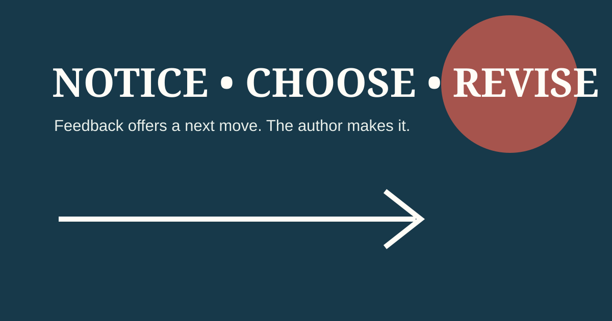

Nice work. Make it better.
AUTHOR GOALREADER NOTICESAUTHOR CHOOSESONE VISIBLE REVISION
Your product is an annotated draft with one immediate, author-chosen revision.
A useful peer conference notices one precise strength, asks one precise question, and leaves the author in charge of one immediate revision.
PERSUASIVE WRITING • PEER CONFERENCE
Your product is an annotated draft with one immediate, author-chosen revision.
Nice work. Make it better.
Your topic sentence clearly names your reason. I got lost in this long sentence; could you check where the main idea ends?
Readers do not correct every line or replace the author’s ideas.
“Reading aloud can be intimidating, particularly for students who struggle with fluency or confidence. A trained education dog provides a non-judgemental audience … Consequently, students are more likely to take risks …”
The Storytime Dog content demonstrates structure only. It is not a source for your topic.
Circle one uncertain word. Try a strategy, then use an approved reference or ask for support.
Mark what you notice. Do not mark everything you would write differently.
Choose one revision that strengthens meaning, clarity, spelling, tense or cohesion.